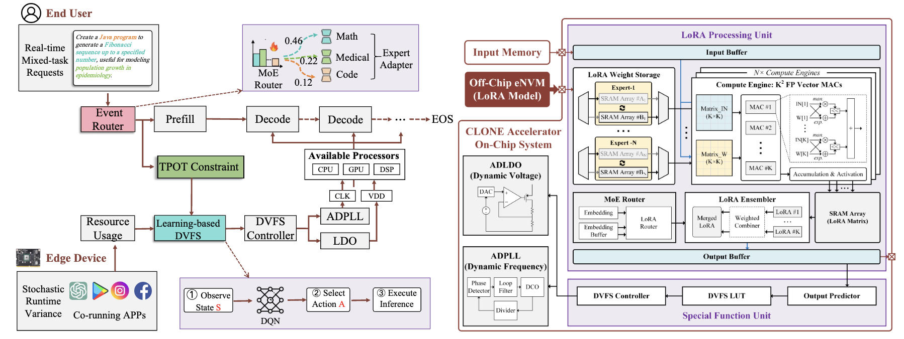
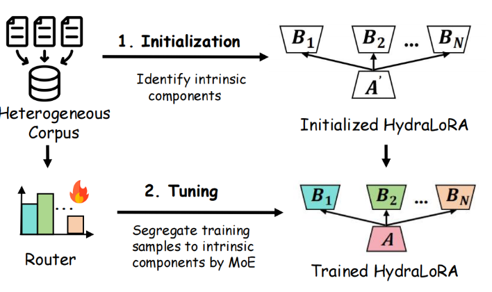
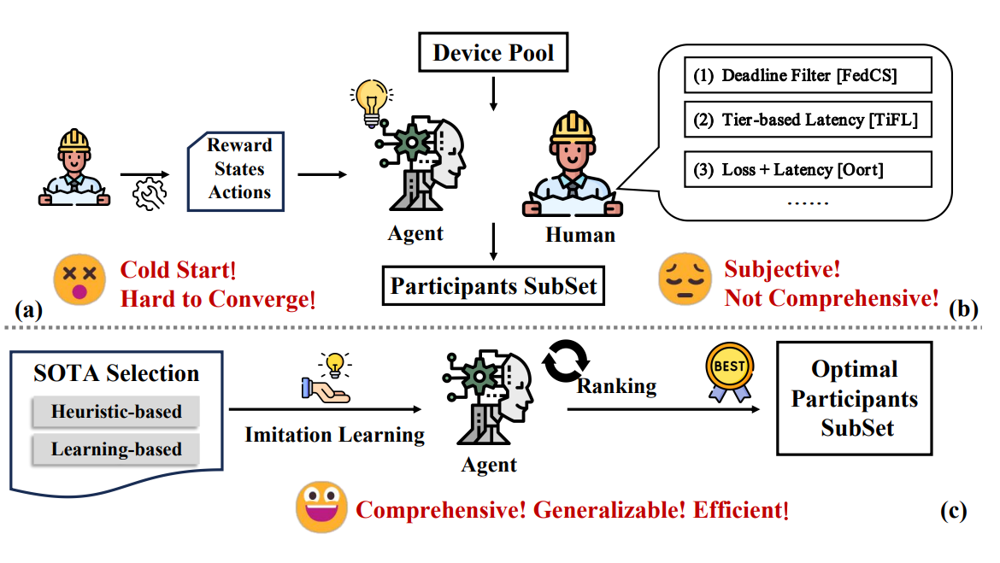
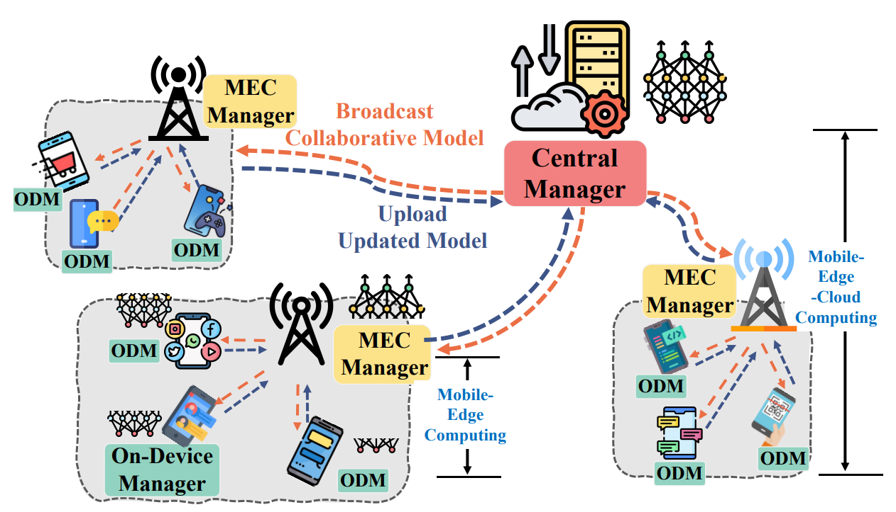
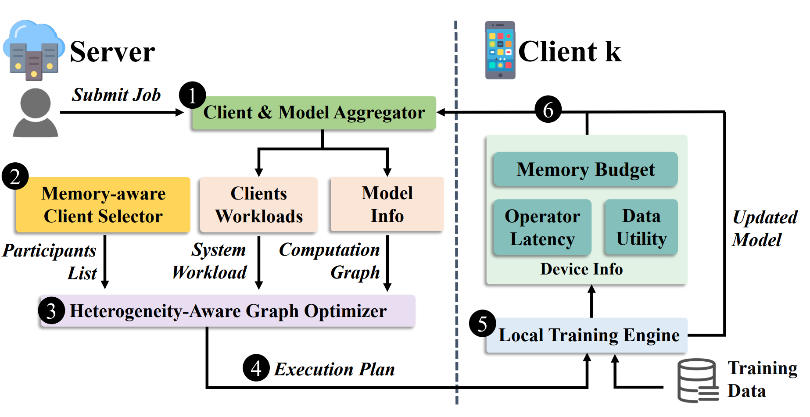
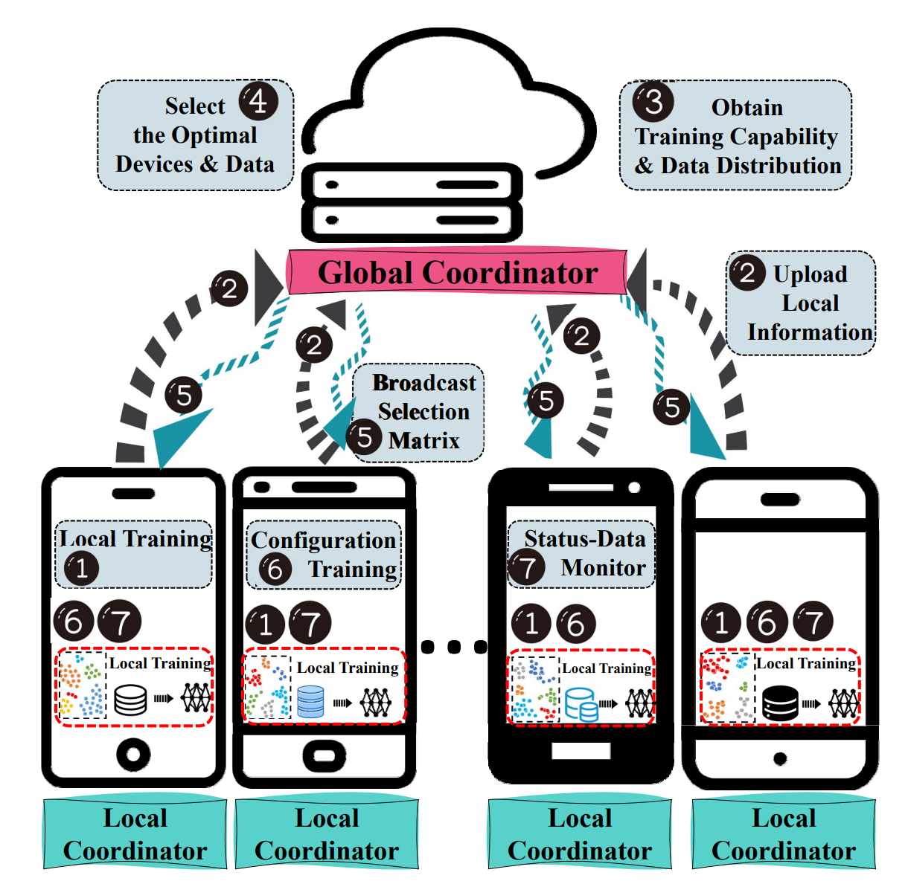

Chunlin TianPh.D StudentEmail | Github | Twitter | Linkedin | Google Scholar |
Short Bio
👋 I am a fourth-year PhD student in Computer Science at State Key Laboratory of Internet of Things for Smart City (SKL-IOTSC), University of Macau under the supervision of Prof. Li Li and Prof. Chengzhong Xu (IEEE Fellow). Currently, I am visiting the Machine Learning Systems Group at University of Cambridge under the supervision of Prof. Nicholas D. Lane. I am also fortunate to be mentored by and to collaborate closely with Dr. Zhan Shi and Prof. Zhijiang Guo. Before joining UM, I received my BEng degree from Xi'an Jiaotong University in 2022.
💡I am broadly interested in ML for System. My current research interests focus on Efficient Machine Learning System at the Edge. On these topics, I have published 10+ papers in leading conferences/journals such as: MICRO, ATC, TPDS and SenSys (System-related); NeurIPS, ICML and IJCAI (ML-related), with several selected for Oral presentations.
Education
-
University of MacauPhD in Computer Science ( MPDS awardee, AR: 30/1300+ = Top 2%)08/2022-Now
-
Xi'an Jiaotong UniversityBEng in Internet of Things (GPA ranking: 2/27)09/2018-06/2022
Selected Publications
|

CLONE: Customizing LLMs for Efficient Latency-Aware Inference at the Edge.
Chunlin Tian, Xinpeng Qin, Kahou Tam, Li Li, Zijian Wang, Yuanzhe Zhao, Minglei Zhang and Chengzhong Xu USENIX Annual Technical Conference (ATC), 2025 [System Conf., CCF-A, AR: 100/634 = 15.8%] |
|
|

HydraLoRA: An Asymmetric LoRA Architecture for Efficient Fine-Tuning. [Code] [News]
Chunlin Tian, Zhan Shi, Zhijiang Guo, Li Li and Chengzhong Xu 38th Annual Conference on Neural Information Processing Systems (NeurIPS), 2024 [ML Conf., CCF-A, Oral, AR: 61/15671 = Top 0.39%] |
|
|

Ranking-based Client Imitation Selection for Efficient Federated Learning.
Chunlin Tian, Zhan Shi, Xinpeng Qin, Li Li and Chengzhong Xu 41st International Conference on Machine Learning (ICML), 2024 [ML Conf., CCF-A, AR: 2609/9653 = 27.0%] |
|
|

Breaking the Memory Wall for Heterogeneous Federated Learning via Model Splitting.
Chunlin Tian, Li Li, Kahou Tam, Yebo Wu, Chengzhong Xu IEEE Transactions on Parallel and Distributed Systems (TPDS), 2024 [System Journal, CCF-A] |
|
|

FedHybrid: Breaking the Memory Wall of Federated Learning via Hybrid Tensor Management.
Kahou Tam, Chunlin Tian, Li Li, Haikai Zhao, Chengzhong Xu 22nd ACM Conference on Embedded Networked Sensor Systems (SenSys), 2024 [Mobile System Conf., CCF-B, AR: 58/313 = 18.5%] |
|
|

HARMONY: Heterogeneity-Aware Hierarchical Management for Federated Learning System.
Chunlin Tian, Li Li, Zhan Shi, Jun Wang and Chengzhong Xu 55th IEEE/ACM International Symposium on Microarchitecture (MICRO), 2022 [System Arch. Conf., CCF-A, AR: 83/369 = 22.5%] |
Other Publications
-
[TMLR 2025, under review] "A Survey on Federated Fine-tuning of Large Language Models." [Code]
Yebo Wu, Chunlin Tian, Jingguang Li, He Sun, Kahou Tam, Li Li, Chengzhong Xu
-
[ICLR SCOPE 2025] "AsymLoRA: Unlocking the Power of Multimodal LLMs via Asymmetric LoRA"
Xuyang Wei, Chunlin Tian, Li Li
SCOPE workshop of 13th International Conference on Learning Representations
-
[CICC 2025] "A One-Shot Floating-Point Compute-in-Memory Macro Featuring PVT Robustness and Mismatch Tolerance for Edge LLMs."
Yuanzhe Zhao, Heng Xie, Zijian Wang, Chunlin Tian, Li Li, Yan Zhu, Rui P. Martins, Chi-Hang Chan, Minglei Zhang.
46th IEEE Custom Integrated Circuits Conference [IC Conf.]
-
[IJCAI 2024] "FedGCS: A Generative Framework for Efficient Client Selection in Federated Learning via Gradient-based Optimization." [Code]
Zhiyuan Ning*, Chunlin Tian*, Meng Xiao, Wei Fan, Pengyang Wang, Li Li, Pengfei Wang and Yuanchun Zhou
33rd International Joint Conference on Artificial Intelligence [AI Conf., CCF-A, AR: 791/5651 = 14.0%]
-
[IWQoS 2024] "FedMG: A Federated Multi-Global Optimization Framework for Autonomous Driving."
Jialiang Ma, Chunlin Tian, Li Li and Chengzhong Xu
32nd IEEE/ACM International Symposium on Quality of Service [Network Conf., CCF-B, AR: 81/326 = 24.8%]
-
[IWQoS 2024] "GreenLLM: Towards Efficient Large Language Model via Energy-Aware Prunning."
Chunlin Tian, Xinpeng Qin and Li Li
32nd IEEE/ACM International Symposium on Quality of Service [Network Conf., CCF-B]
-
[IWQoS 2024] "Heterogeneity-Aware Memory-Efficient Federated Learning via Progressive Layer Freezing."
Yebo Wu, Li Li, Chunlin Tian, Tao Chang, Chi lin, Cong Wang and Chengzhong Xu
32nd IEEE/ACM International Symposium on Quality of Service [Network Conf., CCF-B]
-
[IWQoS 2024] "Heterogeneity-Aware Coordination for Federated Learning via Stitching Pre-trained Blocks."
Shichen Zhan, Yebo Wu, Chunlin Tian, Yan Zhao and Li Li
32nd IEEE/ACM International Symposium on Quality of Service [Network Conf., CCF-B]
-
[MM 2024] "When, Where, and What? A Novel Benchmark for Accident Anticipation and Localization with Large Language Models."
Haicheng Liao, Yongkang Li, Chengyue Wang, Yanchen Guan, KaHou Tam, Chunlin Tian, Li Li, Chengzhong Xu, Zhenning Li
32nd ACM International Conference on Multimedia [AI Conf., CCF-A, Oral, AR: 174/4385 = Top 3.9%]
-
[MM 2024] "CRASH: Crash Recognition and Anticipation System Harnessing with Context-Aware and Temporal Focus Attentions."
Haicheng Liao, Haoyu Sun, Huanming Shen, Chengyue Wang, KaHou Tam, Chunlin Tian, Li Li, Chengzhong Xu, Zhenning Li
32nd ACM International Conference on Multimedia [AI Conf., CCF-A, AR: 1149/4385 = 26.2%]
-
[ICLR-Tiny 2023] "Learn to Select: Efficient Cross-device Federated Learning via Reinforcement Learning."
Chunlin Tian, Zhan Shi and Li Li
11th International Conference on Learning Representations, Tiny Papers Track
Professional Services
- Invited Conference Reviewer: NeurIPS, ICML, ICLR, CVPR, IJCAI, AAAI, ACM MM.
- Invited Journal Reviewer: IEEE TPDS, IEEE TMC, IEEE TITS, ACM TIST.
- External Reviewer: MICRO, HPCA, ASPLOS.
Invited Talks
-
TechBeat: Unlocking Asymmetric LoRA: Superb Performance with Significantly Fewer Parameters, 20/11/2024
-
AI Time: An Asymmetric LoRA Architecture for Efficient Fine-Tuning, 12/11/2024
Mentored Students
✨If you are passionate about research and innovation, I warmly invite you to join us on this exciting academic journey!- Xinpeng Qin, UESTC (B.S.) ---> Tsinghua University (M.S.)
- Shuaihang Zhong, UESTC (B.S.) ---> Nanjing University (M.S.)
- Xuyang Wei, UESTC (B.S.) ---> UESTC (M.S.)
- Yunqi Li, RPI (B.S.) ---> UNC (M.S.)
- Shitian Li, UMAC (B.S.) ---> NUS (M.S.)
Awards
- 10/2024, NeurIPS 2024 Scholar Award
- 08/2022, UM Macao PhD Scholarship
- 06/2022, Outstanding Graduate, Xi'an Jiaotong University
- 09/2019/2020/2021, Outstanding Student, Xi'an Jiaotong University
- 10/2020, The ABU Asia-Pacific Robot Contest (ROBOCON), First Prize
Teaching Assistants
- CISC7203, Database and Data Mining Technologies @UM (Graduate), Spring 2025.
- CISC7204, Data Science and Data Visualization @UM (Graduate), Fall 2024.
- CISC1001, Programming Science @UM (Undergraduate), Spring 2024.
- CISC2001, Computer Organization @UM (Undergraduate), Fall 2023
- CISC7303, Cloud Computing @UM (Graduate), Spring 2023.
- CISC2001, Computer Organization @UM (Undergraduate), Fall 2022.